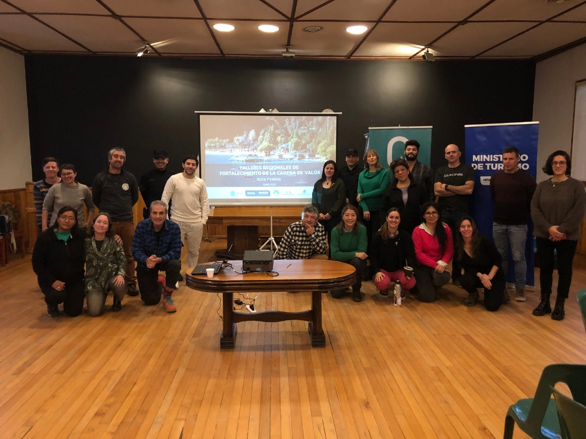

Project description
A comprehensive strategy was formulated to improve the competitiveness of the provincial tourism value chain through a co-creative process involving more than 150 sector stakeholders. The result included economic impact analysis, value chain modeling, definition of improvement opportunities, a portfolio of priority projects and the design of a monitoring and governance system. The strategy reaches more than 1,420 tourism providers across the province’s 94,078 km², strengthening sector efficiency, public-private coordination and evidence-based decision-making.
← Back to portfolio